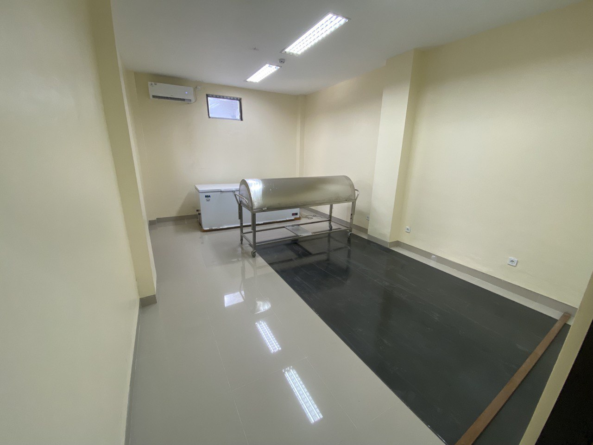

Layanan Kami
A. PELAYANAN MEDIS
Adapun lingkup pelayanan medis di RS kasna medika sebagai berikut
1. Rawat Inap

Sekar Soka
Sekar Cepaka

Sekar Kasna
2. Rawat Jalan

3. Unit Gawat Darurat
4. Bedah
5. Dialisis
6. Rawat Intensif.
B. PELAYANAN PENUNJANG MEDIS
1. Radiologi

2. Laboratorium
3. Anestesi
4. Rehabilitasi medis
C. PELAYANAN PENUNJANG NON MEDIS
1. Gizi
2. Rekam Medis
3. Sanitasi
4. Pemulasaran Jenasah
5. Strerilisasi dan Laundri
CSSD
CSSD
Laundri
6. Sistem Informasi Manajemen Rumah Sakit

SIMRS
D. JENIS PELAYANAN SPESIALIS
a. SPESIALIS DASAR
i. Spesialis Penyakit Dalam
ii. Spesialis Anak
iii. Spesialis Bedah
iv. Spesialis Obstetri Ginekologi
b. SPESIALIS PENUNJANG
i. Spesialis Patologi Klinik
ii. Spesialis Radiologi
iii. Spesialis Anestesi
iv. Spesialis Kedokteran Fisik dan Rehailitasi
c. SPESIALIS LAIN
i. Spesialis Saraf
ii. Spesialis Ortopedi dan Traumatologi
iii. Spesialis Paru
iv. Spesialis Mata